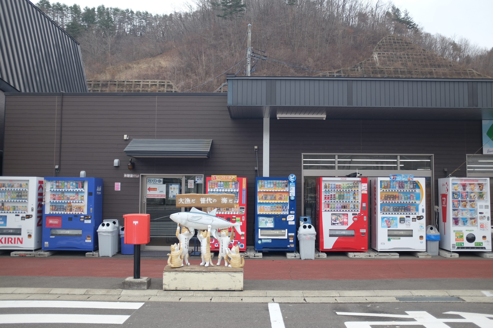
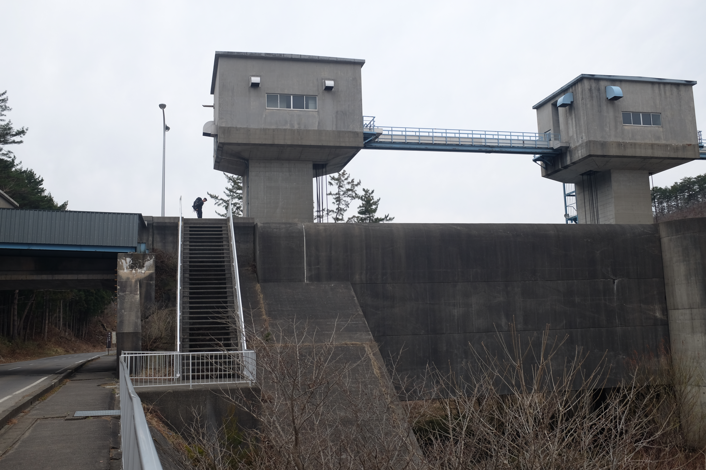
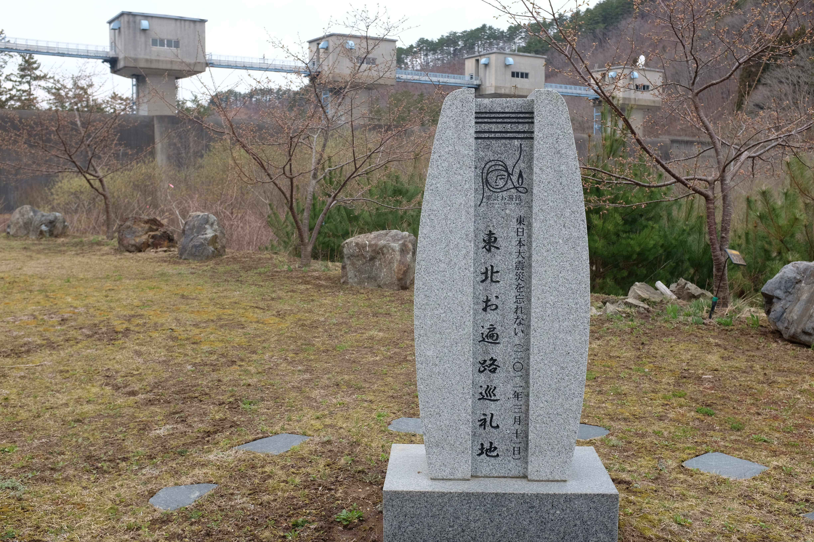
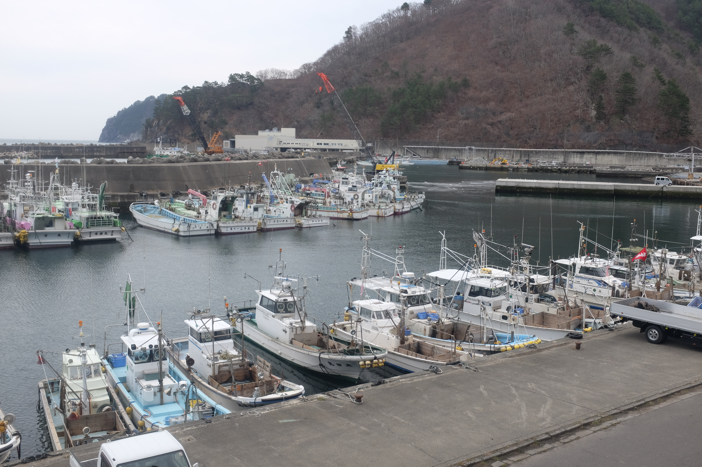
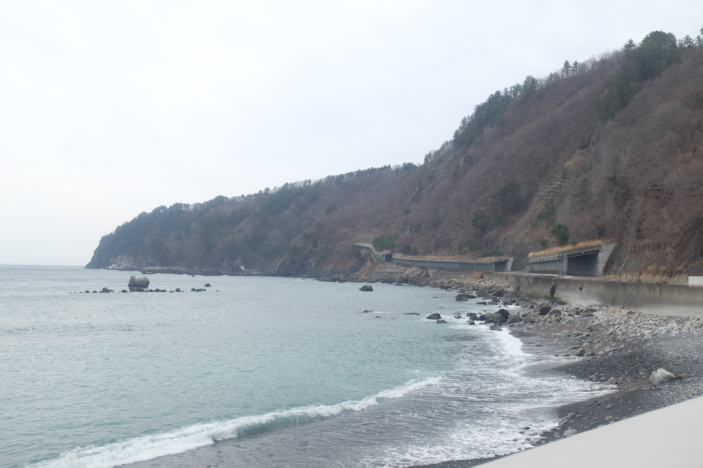
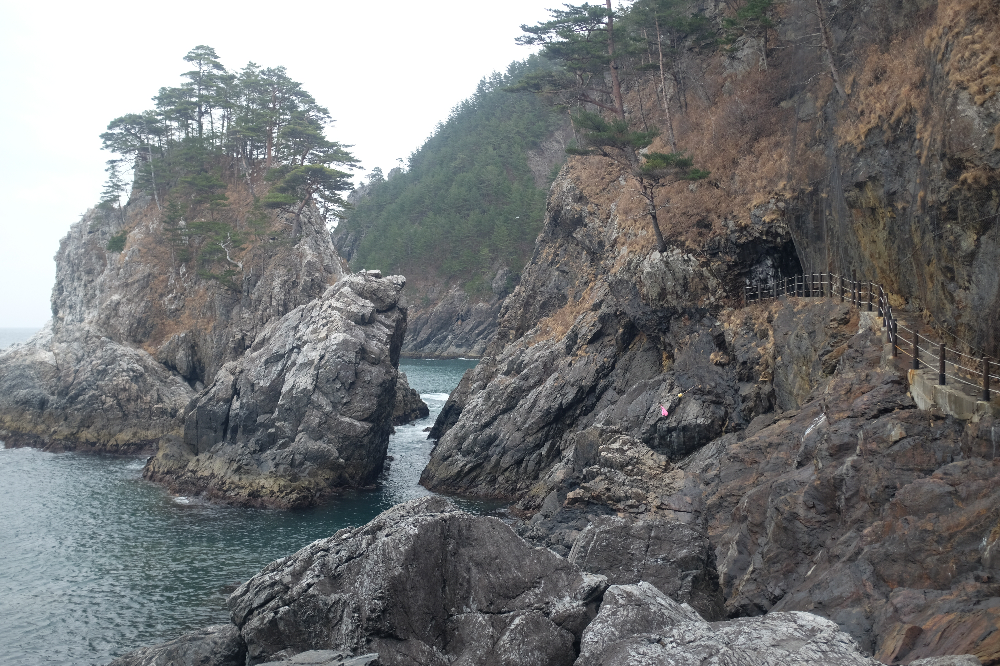
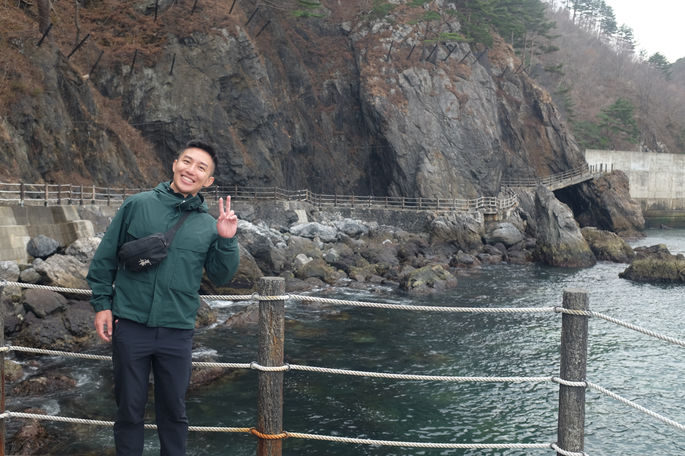
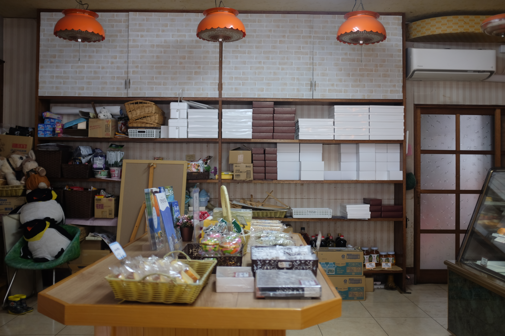

DAY 3: Fudai (普代村) > Kurosakiso (くろさき荘)
SITES: Nedari-hama Natural Trail (ネダリ浜自然歩道)
Stay: Kurosakiso Government Hostel
Another overcast day, with a few hiccups.
We set out early from Kuji with a train to Fudai, then start walking around 08:30. We anticipate it's going to rain today around 15:00, so we want to get to Kurosakiso as fast as we can.
The coast here changes slightly, with more small harbours for boats. We are also nearing the areas where the tsunami in 2011 hit hardest. The architecture and scenery nearby begin to reflect this.



Un-imagineable, the height to which these waters reached. We read up on the history: nearly 20,000 dead, 2,500 missing. Most of them elderly. I can't imagine those numbers. A quiet plaque, in their memory, right at the base of the tsunami walls.

The rest of the hike is a quiet hum up the mountain. On the way, we pass beautiful tunnels and quaint harbours. The Japanese do a colour combination well, as noted by their decor on their boats.
 


We get back to Fudai -- where we started -- and check out their high street. There are only a few shops open. One cute one is the confectionery shop with baked goods, so we stop in for some dessert. The shop looks straight out of the 1990's.

Fudai is an otherwise sleepy town. Kurosakiso, a government dormitory, is a quiet hilltop inn with an onsen. There are some firefighters who have gathered here for a banquet of sorts -- they're all in black suits. And when we head back into our room by 19:30, we hear a distant echo of clanking glasses, Japanese chatter, and loud karaoke.